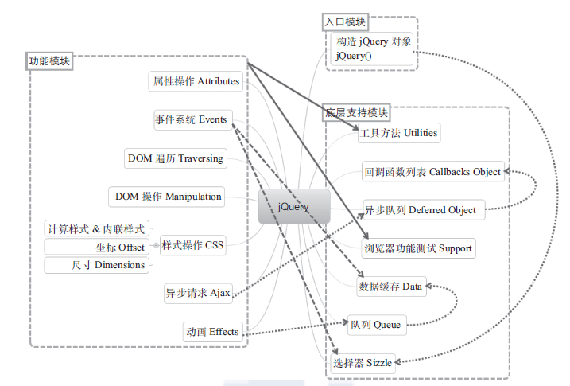
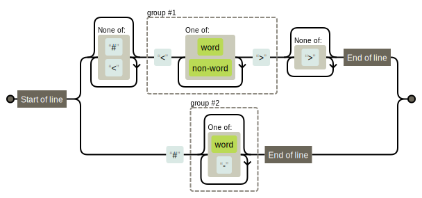
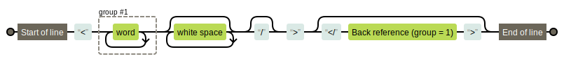
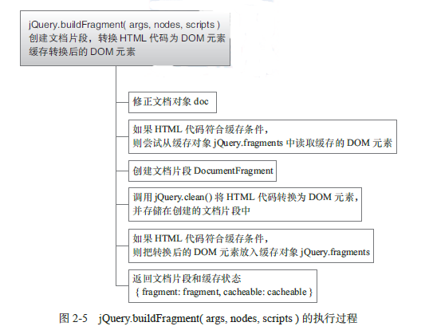

对于jQuery，不仅仅是要熟练掌握它的API，更重要的是了解它的架构思想。这样才能真正地“write less，do more”。
总体架构
设计理念
核心特性：(以1.7.x为准)
- 兼容主流浏览器
- 具有独特链式语法和短小清晰的多功能接口
- 具有高效灵活的CSS选择器，并且可对CSS选择器进行扩展
- 拥有便捷的插件扩展机制和丰富的插件
总体架构
- 入口模块
- 底层支持模块
- 功能模块

图片来源于本书
自调用匿名函数
jQuery所有代码都被包裹在一个立即执行的匿名函数表达式中
为何要创建这样一个自调用匿名函数？
防止变量全局污染。
最后通过声明window.jQuery = window.$ = jQuery;将jQuery添加到window对象上，只暴露其为全局变量
为何要为函数设置参数window，并传入window对象？
- 通过传入window对象，可以使window对象变为局部变量，这样在代码块中访问window对象时，就不需要将作用域链回退到顶层作用域链，从而更快地访问window对象；
- 将window对象作为参数传入可以在压缩代码时进行优化，在压缩文件中可以看到下面代码： 12(function(a,b){ ... })(window);// 参数 window 被压缩为 a，参数 undefined 被压缩为 b
为何要为函数设置参数undefined？
- 缩短查找undefined时的作用域链(undefined其实是window对象的一个属性)
- 优化压缩(如上代码所示)
- 可以确保参数undefined值为undefined
最好不要省略自调用匿名函数之前和之后的分号
构造jQuery对象
构造函数jQuery()
构造函数jQuery()有七种用法：
jQuery(selector[,context])
字符串参数是选择表达式，则遍历文档查找与之匹配的DOM元素，并创建一个包含这些DOM引用的jQuery对象；若没有元素与之匹配则创建一个空jQUery对象。
这一点与原生JS不同，原生JS找不到会报错
显然jQuery的处理更加合理
若selector是简单的#id，且没有指定上下文context，则直接调用浏览器原生方法document.getElementById()查找；如果是比#id复杂的选择器或指定了上下文，则通过jQuery.find()查找
find()方法是由选择器引擎Sizzle实现
jQuery(html[,ownerDocument]),jQuery(html,props)
传入的字符串参数为HTML代码 ：
- 若HTML代码是一个单独标签，则会调用原生方法
document.createElement()创建DOM元素 - 若比单标签复杂，则利用浏览器的
innerHTML机制创建DOM元素，这过程由方法jQuery.buildFragment()和方法jQuery.clean()实现 - 还可以传入属性，以及事件 1234567$("<div/>", {"class": "test", //class是js保留字，所以需要引号text: "Click me!",click: function(){$(this).toggleClass("test");}}).appendTo("body");
jQuery(element),jQuery(elementArray)
传入一个DOM元素或元素数组，将其封装到jQuery对象中并返回
常见于事件监听函数，即把关键字this引用的DOM元素封装为jQuery对象，然后在该jQuery对象上调用jQuery方法
jQuery(object)
传入一个普通的JS对象，则把该对象封装到jQuery对象中并返回。
方便于在普通JS对象上实现自定义事件的绑定和触发
jQuery(callback)
若传入一个函数，则在document上绑定一个ready事件监听函数，当DOM结构加载完成时执行。
jQuery(jQuery object)
若传入一个jQUery对象则创建该对象的一个副本并返回
jQuery()
若不传入任何参数则返回一个空的jQuery对象
总体结构
代码结构如下：

- 为何要在jQuery内部用new创建并返回另一个构造函数的实例？
答：为了书写方便，我们在创建jQuery对象时可以省略new直接写jQuery() - 为何在97行执行jQuery.fn = jQuery.prototype?
答：简写，方便拼写、 - 既然调用构造函数
jQuery()返回的jQuery 对象实际上是构造函数jQuery.fn.init()的
实例，为什么能在构造函数jQuery.fn.init()的实例上调用构造函数jQuery()的原型方法和属
性？例如，$('#id').length和$('#id').size()。
答：322行jQuery.fn.init.prototype = jQuery.fn; - 为什么要把第25 ～ 955 行的代码包裹在一个自调用匿名函数中，然后把第25 行定
义的构造函数jQuery()作为返回值赋值给第22 行的jQuery 变量？去掉这个自调用匿名函
数，直接在第25 行定义构造函数jQuery()不也可以吗？去掉了不是更容易阅读和理解吗？
答：去掉第25 ～ 955 行的自调用匿名函数当然可以，但会潜在地增加构造jQuery 对象模块
与其他模块的耦合度。在第25 ～ 97 行之间还定义了很多其他的局部变量，这些局部变量只
在构造jQuery 对象模块内部使用。通过把这些局部变量包裹在一个自调用匿名函数中，实现
了高内聚低耦合的设计思想。 - 在原型对象
jQuery.prototype上定义的属性和方法会被所有jQuery 对象继承，可以有
效减少每个jQuery 对象所需的内存。
jQuery.fn.init(selector,context,rootjQuery)
源码分析
定义
定义构造函数jQuery.fn.init( selector, context, rootjQuery )，它接受3 个参数：- 参数 selector：可以是任意类型的值，但只有 undefined、DOM 元素、字符串、函数、
jQuery 对象、普通 JavaScript 对象这几种类型是有效的，其他类型的值也可以接受但
没有意义。 - 参数 context：可以不传入，或者传入 DOM 元素、jQuery 对象、普通 JavaScript 对象
之一。 参数 rootjQuery：包含了 document 对象的 jQuery 对象(也即document对象)，用于
document.getElementById()查找失败、selector 是选择器表达式且未指定context、selector 是函数的情况。123456789// document.getElementById() 查找失败return rootjQuery.find( selector );// selector 是选择器表达式且未指定 contextreturn ( context || rootjQuery ).find( selector );// selector 是函数return rootjQuery.ready( selector );// 定义 rootjQuery// All jQuery objects should point back to theserootjQuery = jQuery(document);第100 行：变量match、elem、ret、doc 的功能会在接下来的分析过程中介绍。
- 参数 selector：可以是任意类型的值，但只有 undefined、DOM 元素、字符串、函数、
参数selector可以转换为false
此时说明传入的参数为undefined，空字符串，null等，直接返回this(空jQuery对象)1234// Handle $(""), $(null), or $( undefined )if ( !selector ) {return this;}参数selector是DOM元素
若参数selector有属性NodeType，则认为selector是DOM元素，手动设置第一个元素和属性context指向该DOM元素，属性length为1，然后返回包含了该DOM元素引用的jQuery对象123456// Handle $(DOMElement)if ( selector.nodeType ) {this.context = this[0] = selector; //存疑this.length = 1;return this;}参数selector是字符串”body”
由于文档树中只存在一个body元素，这里是对查找“body”的优化12345678// The body element only exists once, optimize finding itif ( selector === "body" && !context && document.body ) {this.context = document;this[0] = document.body;this.selector = selector;this.length = 1;return this;}参数selector是其他字符串
若参数selector是其他字符串，则先检测selector是HTML代码还是#id12345678910// Handle HTML stringsif( typeof selector === "string" ){// Are we dealing with HTML string or an ID?( selector.charAt(0) === "<" && selector.charAt( selector.length - 1 ) === ">" && selector.length >= 3 ){// Assume that strings that start and with <> are HTML and skip the regex checkmatch = [ null, selector, null ];}{match = quickExpr.exec( selector );}}第126 ～ 128 行：如果参数selector 以“ <”开头、以“ >”结尾，且长度大于等于3， 则假设这个字符串是HTML 片段，跳过正则quickExpr 的检查。注意这里仅仅是假设，并不一定表示它是真正合法的HTML 代码，如”
<div></p>“。
第131 行：否则，用正则quickExpr 检测参数selector 是否是稍微复杂一些的HTML 代
码（如“abc<div>”）或#id，匹配结果存放在数组match 中。正则quickExpr 的定义如下：123//A simple way to check for HTML strings or ID strings//Prioritize #id over <tag> to avoid XSS via location.hash (#9521)quickExpr = /^(?:[^#<]*(<[\w\W]+>)[^>]*$|#([\w\-]*)$)/,
正则quickExpr 包含两个分组，依次匹配HTML 代码和id。如果匹配成功，则数组
match 的第一个元素为参数selector，第二个元素为匹配的HTML 代码或undefined，第三个
元素为匹配的id 或undefined。下面的例子测试了正则quickExpr 的功能：1234567quickExpr.exec( '#target' ); // ["#target", undefined, "target"]quickExpr.exec( '<div>' ); // ["<div>", "<div>", undefined]quickExpr.exec( 'abc<div>' ); // ["abc<div>", "<div>", undefined]quickExpr.exec( 'abc<div>abc#id' ); // ["abc<div>abc#id", "<div>", undefined]quickExpr.exec( 'div' ); // nullquickExpr.exec( '<div><img></div>' );// ["<div><img></div>","<div><img></div>", undefined]exec()为何物？？
如果exec()找到了匹配的文本，则返回一个结果数组。否则，返回 null。此数组的第 0 个元素是与正则表达式相匹配的文本，第 1 个元素是与RegExpObject的第 1 个子表达式相匹配的文本（如果有的话），第 2 个元素是与RegExpObject的第 2 个子表达式相匹配的文本（如果有的话），以此类推。除了数组元素和length属性之外，exec()方法还返回两个属性。index属性声明的是匹配文本的第一个字符的位置。input属性则存放的是被检索的字符串string。
为何quickExpr中第一个分组group#1开头匹配要排除#这个字符？
防止恶意XSS攻击，假设没有这个限制,在代码中有$(location.hash),用户修改hash值为#<img src=/ onerror=alert(1)>，并刷新页面，此时$(location.hash)就被执行为创建一个<img>,但是显然这个标签没有输入正确的src,所以会报错并触发onerror事件，这样的话，攻击者就可以在onerror中编写恶意代码，进行攻击参数selector是单独标签
此时则调用document.createElement()创建标签对应的DOM元素12345678910111213141516171819// Verify a match, and that no context was specified for #idif ( match && (match[1] || !context) ) {// HANDLE: $(html) -> $(array)if ( match[1] ) {context = context instanceof jQuery ? context[0] : context;doc = ( context ? context.ownerDocument || context : document );// If a single string is passed in and it's a single tag// just do a createElement and skip the restret = rsingleTag.exec( selector );if ( ret ) {if ( jQuery.isPlainObject( context ) ) {selector = [ document.createElement( ret[1] ) ];jQuery.fn.attr.call( selector, context, true );} else {selector = [ doc.createElement( ret[1] ) ];}}}}第135 行：检测正则quickExpr 匹配参数selector 的结果，如果match[1] 不是undefined，即参数selector 是HTML 代码，或者match[2] 不是undefined，即参数selector 是#id，并且未传入参数context。这行代码利用布尔表达式的计算顺序，省略了对match[2] 的判断，完整的表达式如下：
1if ( match && (match[1] || match[2] && !context) ) {如果match 不是null 且match[1] 是undefined，那么此时match[2] 必然不是undefined，所以对match[2] 的判断可以省略。
第138 ～ 140 行：开始处理参数selector 是HTML 代码的情况，先修正context、doc，然后用正则rsingleTag 检测HTML 代码是否是单独标签，匹配结果存放在数组ret 中。
正则 rsingleTag 的定义如下：12// Match a standalone tagrsingleTag = /^<(\w+)\s*\/?>(?:<\/\1>)?$/,
正则rsingleTag包含一个分组(\w+)，该分组中不包含左右尖括号、不能包含属性、可以自关闭或不关闭；\1指向匹配的第一个分组(\w+)。
第146 ～ 153 行： 如果数组ret 不是null， 则认为参数selector是单独标签， 调用document.createElement()创建标签对应的DOM 元素；如果参数context是普通对象，则调用jQuery 方法.attr()并传入参数context，同时把参数context中的属性、事件设置到新创建的DOM 元素上。
之所以把创建的DOM 元素放入数组中，是为了在后面第160 行方便地调用jQuery.merge()方法。方法jQuery.merge()用于合并两个数组的元素到第一个数组，相关内容在后面介绍和分析。
方法jQuery.isPlainObject()用于检测对象是否是“纯粹”的对象，即用对象直接量{}或new Object()创建的对象。
参数selector是复杂HTML代码12345}else{ret = jQuery.buildFragment([match[1]],[doc]);selector = (ret.cacheable?jQuery.clone(ret.fragment):ret.fragment).childNodes;}return jQuery.merge(this,selector);jQuery.buildFragment()这个函数返回:1234{//fragment:含有转换后的DOM元素的文档片段//cacheable:HTML代码是否满足缓存条件}最后将新创建的DOM元素数组合并到当前jQuery对象中返回
参数selector是#id,且未指定参数context
此时直接调用document.getElentById()查找，源码如下:123456789101112131415}else{elem = document.getElementById(match[2]);//检测parentNode属性，因为在Blackberry4.6中会返回已经不存在的节点if(elem && elem.parentNode){//处理在IE低版本和Opera中返回的元素name为对应值，而非Idif(elem.id !== match[2]){return rootjQuery.find(selector);}this.length = 1;this[0] = elem;}this.context = document;this.selector = selector;return this;}参数selector是选择器表达式
12345678}else if(!context || context.jquery){//若没有指定上下文，则指定rootjQuery为上下文；//若指定上下文，且上下文为jQuery对象则直接使用find()return (context || rootjQuery).find(selector);}else{//若指定了上下文且上下文不是jQuery对象，则将其包装为JQ对象再进行查找return this.constructor(context).find(selector);}参数selector是函数
123}else if(jQuery.isFunction(selector)){return rootjQuery.ready(selector);}从此也可得知:
$(function)是$(document).ready(function)的简写
jQuery.buildFragment(args,nodes,scripts)
该方法先创建一个文档片段DocumentFragment，然后调用jQuery.clean(elems,context,fragment,scripts)将HTML代码转换为DOM元素，并存储在创建的文档片段中

jQuery.clean(elems,context,fragment,scripts)
定义方法
|
|